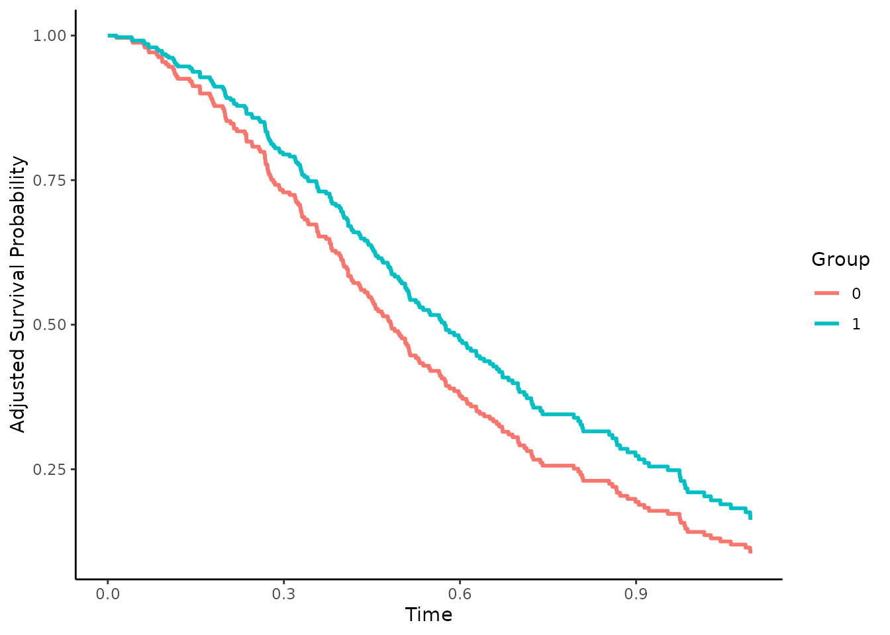
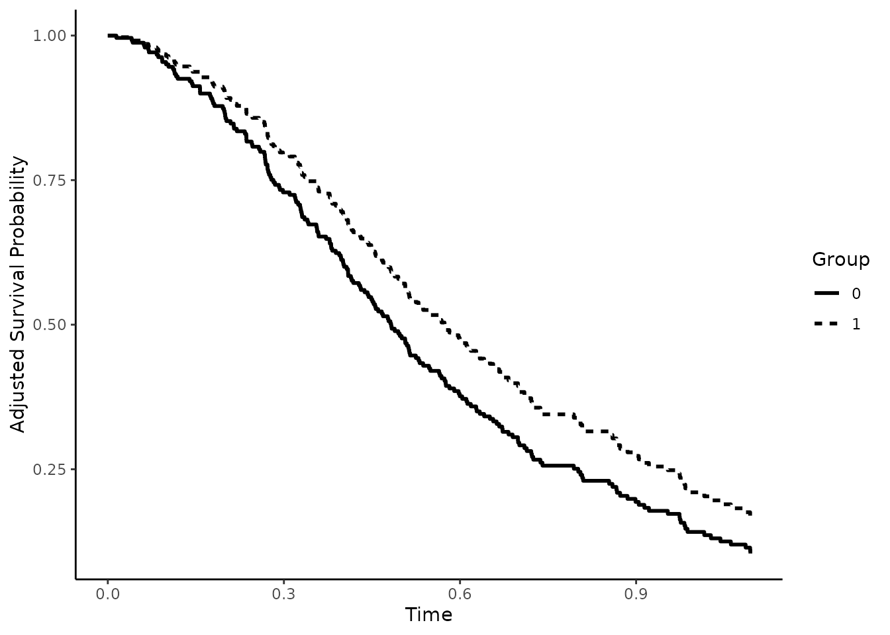
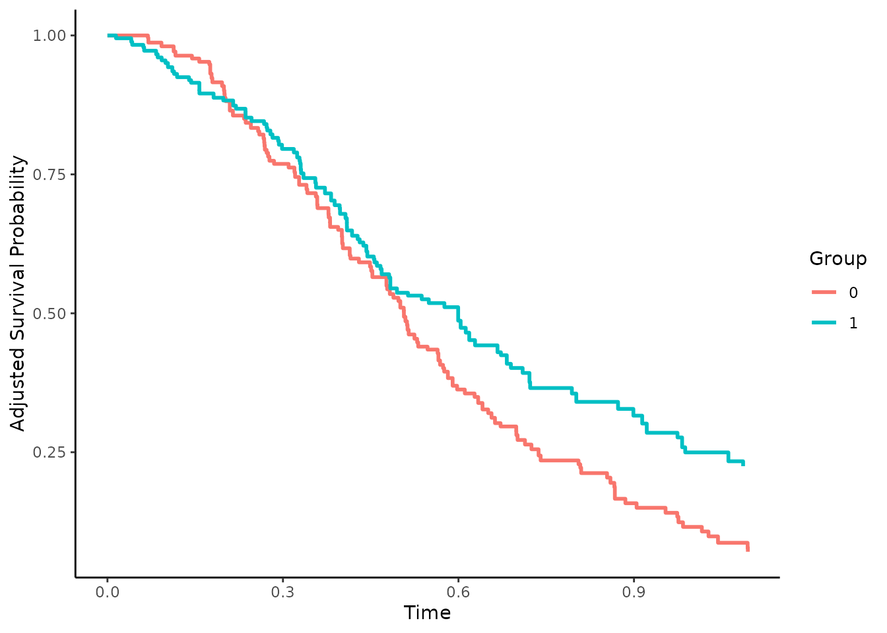
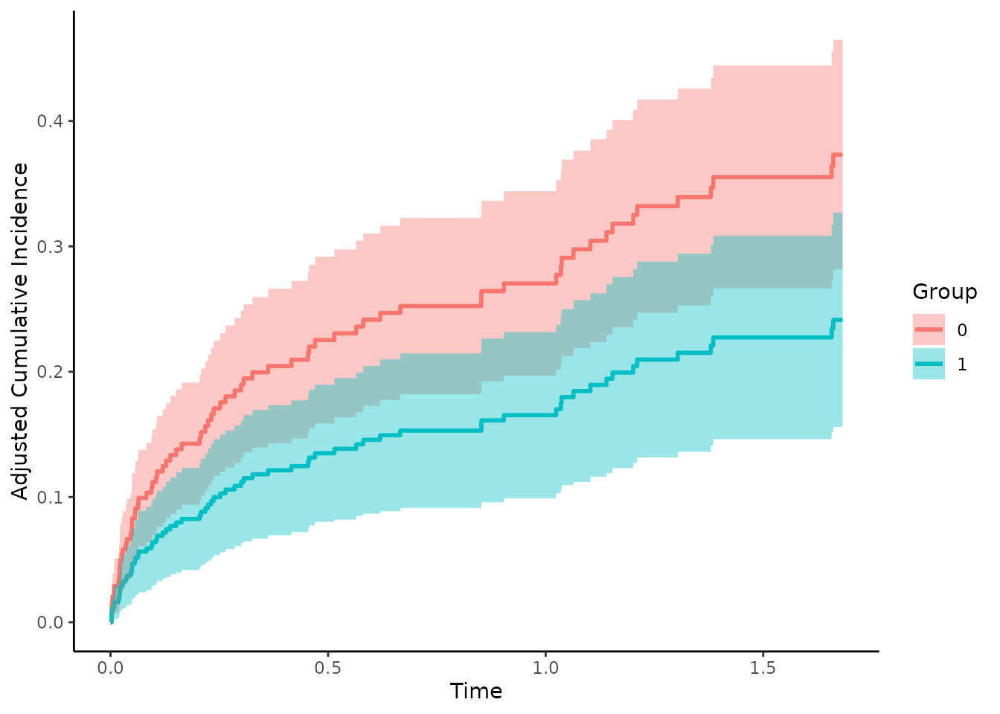

The main purpose of the adjustedCurves R-Package is to calculate and plot confounder-adjusted survival curves and cause-specific confounder-adjusted cumulative incidence functions (CIF) using a variety of methods. Group- or treatment-specific survival curves and cumulative incidence functions are often used to graphically display the treatment (or group) effect on the survival probability. When the data at hand comes from a randomized controlled trial with balanced subgroups, simple stratified estimators of the survival curves or CIFs are unbiased. When randomization fails or was not done at all however, confounding can lead to biased depictions (see Rubin 1974; Pearl 2009).
Luckily, a lot of different methods to adjust survival curves and CIFs for confounding have been proposed. With the adjustedCurves package, these methods can be used with little effort.
Installation
The R-Package is currently not available on CRAN, but can be installed easily using the devtools package:
or the remotes package:
Further packages might have to be installed, depending on the specified method.
Adjusted Survival Curves
Let’s start with the standard survival setting. Using the sim_confounded_surv function, we simulate some survival data (Chatton et al. 2020):
library(survival)
library(ggplot2)
library(adjustedCurves)
# set random number generator seed to make this reproducible
set.seed(41)
# simulate standard survival data with 300 rows
data <- sim_confounded_surv(n=300, max_t=1.1, group_beta=-0.6)
# code the grouping variable as a factor
data$group <- as.factor(data$group)
# take a look at the first few rows
head(data)## x1 x2 x3 x4 x5 x6 group time event
## 1 0 1 1 0.3009753 -0.8457787 -1.0629242 0 0.5877590 1
## 2 1 1 1 -0.4246957 1.2526557 -0.9759365 0 0.2620015 1
## 3 1 0 1 1.2758093 -0.6487439 0.4174419 1 0.7096176 1
## 4 0 0 0 -0.3353432 -0.3888960 -1.3187617 0 0.6344717 1
## 5 1 1 0 1.1226585 -2.0605362 -2.2049385 0 0.6684994 1
## 6 1 1 1 -1.1457605 -0.6020554 -0.9689735 0 0.4787611 1Using the default arguments, this function outputs a data.frame with 6 independently drawn covariates (x1 - x6), a binary group variable (group), the observed event time (time) and the event indicator (event). In this setting, there is only one type of event (1). When the observations are right-censored this indicator is set to 0. This is the standard data format used in standard time-to-event analysis.
Direct Standardization
To calculate confounder-adjusted survival curves fo each group of this dataset using Direct Standardization (also known as G-Computation or Corrected Group Prognosis method, see Makuch (1982) or Chang et al. (1982)), we first have to fit a coxph model:
# it is important to use X=TRUE in the coxph function call
outcome_model <- survival::coxph(Surv(time, event) ~ x1 + x2 + x3 + x4 + x5 +
x6 + group,
data=data, x=TRUE)This model can then be used in a call to the adjustedsurv function, as shown below:
adjsurv <- adjustedsurv(data=data,
variable="group",
ev_time="time",
event="event",
method="direct",
outcome_model=outcome_model,
conf_int=T)The argument data simply refers to our data.frame, the argument variable specifies our grouping variable of interest and the ev_time and event variable specify the time-to-event variables in our data.frame. Setting the method to "direct" will result in G-Computation estimates, based on the previously fit cox-regression model supplied using the outcome_model argument.
Doing this returns a list with some needed output objects. Most important however is the adjsurv data.frame in there, containing the adjusted survival curves and corresponding confidence intervals (because we used conf_int=TRUE in the original function call). We can take a look at this object using the following code:
head(adjsurv$adjsurv)## time surv group se ci_lower ci_upper
## 1 0.00000000 1.0000000 0 0.000000000 1.0000000 1.0000000
## 2 0.02658129 0.9958662 0 0.004145877 0.9877404 1.0000000
## 3 0.05820661 0.9916462 0 0.005931559 0.9800206 1.0000000
## 4 0.06479831 0.9873682 0 0.007302477 0.9730557 1.0000000
## 5 0.07258965 0.9830982 0 0.008416298 0.9666025 0.9995938
## 6 0.07803725 0.9788482 0 0.009439635 0.9603469 0.9973496More importantly however, we can plot the survival curves directly using the plot method:
plot(adjsurv) This plot function comes with many options which are listed in the documentation. To plot the point-wise confidence intervals, we can set the argument conf_int to TRUE:
plot(adjsurv, conf_int=TRUE)## Loading required namespace: pammtools
Instead of using colors to differentiate the curves we can also use different linetypes, by setting the linetype argument to TRUE and the color argument to FALSE:
plot(adjsurv, linetype=TRUE, color=FALSE)
We can also add small indicator lines for censored observations using censoring_ind="lines":
plot(adjsurv, color=TRUE, censoring_ind="lines")
Indicator lines for the median survival time can be added using median_surv_lines=TRUE:
plot(adjsurv, color=TRUE, median_surv_lines=TRUE)
Many more custom settings are available. For more details and examples see ?plot.adjustedsurv.
Inverse Probability of Treatment Weighting
The adjustedsurv function essentially works the same with every available method. Since the methods are however vastly different in nature, some additional arguments have to be supplied by the user. For example, using the Inverse Probability of Treatment Weighting method (IPTW), we need to model the treatment assignment mechanism instead of the outcome mechanism (see Xie and Liu (2005)). This can be done using a logistic regression model as follows:
treatment_model <- glm(group ~ x1 + x2 + x3 + x4 + x5 + x6,
data=data, family="binomial"(link="logit"))
adjsurv <- adjustedsurv(data=data,
variable="group",
ev_time="time",
event="event",
method="iptw_km",
treatment_model=treatment_model,
conf_int=TRUE)The resulting curves can be plotted as before:
plot(adjsurv)
Since both methods were used correctly here, there are only slight differences in the results. Big differences between the two methods usually indicate that either the cox-regression model or the logistic regression model are incorrectly specified.
Augmented Inverse Probability of Treatment Weighting
Doubly-Robust methods can be helpful in such cases (see Robins and Rotnitzky (1992) or Ozenne et al. (2020)). The standard Augmented Inverse Probability of Treatment Weighting estimator utilized both kinds of models at the same time. If either of the models is correctly specified, the resulting estimates will be unbiased. It can be used in the same way as the other methods, only that this time both models have to be supplied:
treatment_model <- glm(group ~ x1 + x2 + x3 + x4 + x5 + x6,
data=data, family="binomial"(link="logit"))
outcome_model <- survival::coxph(Surv(time, event) ~ x1 + x2 + x3 + x4 + x5 +
x6 + group, data=data, x=TRUE)
adjsurv <- adjustedsurv(data=data,
variable="group",
ev_time="time",
event="event",
method="aiptw",
treatment_model=treatment_model,
outcome_model=outcome_model,
conf_int=TRUE)
plot(adjsurv, conf_int=TRUE)
Adjusted Cumulative Incidence Functions
In many situations there are multiple mutually exclusive types of events instead of just one event. This is formally known as a competing risks situation. In these situations, survival curves can not be estimated anymore. However, the cumulative incidence function can be used instead. Without randomization, these CIFs face the same problems due to confounding as the survival curves do. Many of the methods to adjust survival curves for confounders can be used to adjust CIFs in very similar fashion.
While the computational details and the underlying theory is slightly different (see Ozenne et al. (2020)), the syntax for the R-Package stays pretty much exactly the same. The only major difference is that instead of using the adjustedsurv function, the adjustedcif function should be utilized. Additionally, the user now also has to specify which event-type is of interest (argument cause).
First we need new example data, mirroring the competing risks situation. We are going to use the sim_confounded_crisk function, which does the same thing as the sim_confounded_surv function, but with competing risks data:
data <- sim_confounded_crisk(n=300)
data$group <- as.factor(data$group)Direct Standardization
Let’s again start with the Direct Standardization method. Instead of using a simple coxph method, we need to use a model for the time-to-event process which takes the multiple event-types into account. One such method is the Cause-Specific Cox-Regression model. A simple implementation of this model is contained in the riskRegression R-Package.
outcome_model <- riskRegression::CSC(Hist(time, event) ~ x1 + x2 + x3 + x4 +
x5 + x6 + group, data=data)This model can then be used in a call to the adjustedcif function, as shown below:
adjcif <- adjustedcif(data=data,
variable="group",
ev_time="time",
event="event",
method="direct",
outcome_model=outcome_model,
cause=1,
conf_int=TRUE)
plot(adjcif)
This shows the confounder-adjusted cumulative incidence functions for cause = 1. By setting cause to 2 we get the confounder-adjusted cumulative incidence functions for the other cause:
adjcif <- adjustedcif(data=data,
variable="group",
ev_time="time",
event="event",
method="direct",
outcome_model=outcome_model,
cause=2,
conf_int=TRUE)
plot(adjcif)
Inverse Probability of Treatment Weighting
The IPTW estimator can be used exactly the same way as we did with the adjustedsurv function:
treatment_model <- glm(group ~ x1 + x2 + x3 + x4 + x5 + x6,
data=data, family="binomial"(link="logit"))
adjcif <- adjustedcif(data=data,
variable="group",
ev_time="time",
event="event",
method="iptw",
treatment_model=treatment_model,
cause=1,
conf_int=TRUE)
plot(adjcif)
The other estimators can be used using essentially the same syntax.
Adjusted Curves with more than two treatments
In many applications there are more than two treatments. Some of the methods included in this R-Package allow calculations for an arbitrary number of treatments. In these cases the code does not change at all and can be used exactly in the same way as before. The only difference occurs when using IPTW methods. Here the user has to use a multinomial logistic regression model instead of a regular logistic regression to model the outcome. This is illustrated below.
First we again create a simulated data set (for single event survival data). The function is only able to create binary treatment variables, but we can simply resample all occurrences of 1 into 1 and 2, creating 3 treatments, where 1 and 2 have an identical treatment effect and selection process:
# set random number generator seed to make this reproducible
set.seed(41)
# simulate standard survival data with 300 rows
data <- sim_confounded_surv(n=300)
# add another group (NOTE: this is done only to showcase the method and does not
# reflect what should be done in real situations)
data$group[data$group==1] <- sample(c(1, 2), size=nrow(data[data$group==1,]),
replace=TRUE)
# code the grouping variable as a factor
data$group <- as.factor(data$group)The Direct Adjusted survival curves can be calculated exactly as before:
outcome_model <- survival::coxph(Surv(time, event) ~ x1 + x2 + x3 + x4 +
x5 + x6 + group, data=data, x=TRUE)
adjsurv <- adjustedsurv(data=data,
variable="group",
ev_time="time",
event="event",
method="direct",
outcome_model=outcome_model,
conf_int=TRUE)
plot(adjsurv)For the IPTW based estimates we first fit a multinomial logistic regression model using the multinom function from the nnet R-Package and use it with the same code as before:
treatment_model <- nnet::multinom(group ~ x1 + x2 + x3 + x4 + x5 + x6,
data=data)## # weights: 24 (14 variable)
## initial value 329.583687
## iter 10 value 297.006395
## iter 20 value 296.077106
## final value 296.077099
## converged
adjsurv <- adjustedsurv(data=data,
variable="group",
ev_time="time",
event="event",
method="iptw_km",
treatment_model=treatment_model,
conf_int=TRUE)
plot(adjsurv, conf_int=TRUE)Calculating the adjusted restricted mean survival time
An alternative measure to hazard-ratios is the restricted mean survival time, which denotes the integral of the survival curve from time 0 up to a specified point in time (see Royston et al. 2013). A confounder adjusted version of this statistic can be calculated by simply integrating the confounder adjusted survival curves instead of a normal Kaplan-Meier curve (Conner et al. 2019). The adjustedCurves package allows the user to do this by simply calling the adjusted_rmst function on a previously created adjustedsurv object:
adjusted_rmst(adjsurv, to=1)## ------------------------------------------------------------------
## Confounder-Adjusted Restricted Mean Survival Time
## ------------------------------------------------------------------
##
## Using the interval: 0 to 1
##
## RMST
## 0 0.49882
## 1 0.59543
## 2 0.64151
## ------------------------------------------------------------------The function returns adjusted RMST for every level of the “group” variable. When bootstrapping was performed when calling the adjustedsurv function, standard deviations and confidence intervals can be calculated using this function as well by setting the use_boot argument to TRUE:
adjsurv <- adjustedsurv(data=data,
variable="group",
ev_time="time",
event="event",
method="iptw_km",
treatment_model=treatment_model,
conf_int=TRUE,
bootstrap=TRUE,
n_boot=300)
adjrmst <- adjusted_rmst(adjsurv, to=1, use_boot=TRUE)
print(adjrmst)## ------------------------------------------------------------------
## Confounder-Adjusted Restricted Mean Survival Time
## ------------------------------------------------------------------
##
## Using the interval: 0 to 1
##
## RMST RMST SE 95% CI (lower) 95% CI (upper) N Boot
## 0 0.49882 0.02294 0.46291 0.53987 300
## 1 0.59543 0.03757 0.53342 0.66128 300
## 2 0.64151 0.03736 0.58050 0.70010 300
## ------------------------------------------------------------------The results can also be plotted easily:
plot(adjrmst)
Testing the Difference betweeen Two Survival Curves
In some cases the researcher might be interested to formally test the hypothesis that two adjusted survival curves or two cumulative incidence functions are different in a certain interval. This can be done with the adjusted_curve_diff function. It calculates the integral of the difference between two curves for each bootstrap estimate, shifts that distribution to be centered around 0 and calculates a p-value based on that shifted distribution:
# set random number generator seed to make this reproducible
set.seed(41)
# simulate standard survival data with 300 rows
data <- sim_confounded_surv(n=300)
data$group <- as.factor(data$group)
# fit cox-regression model
outcome_model <- survival::coxph(Surv(time, event) ~ x1 + x2 + x3 + x4 + x5 +
x6 + group, data=data, x=TRUE)
# run adjustedsurv with bootstrap=TRUE
adjsurv <- adjustedsurv(data=data,
variable="group",
ev_time="time",
event="event",
method="direct",
outcome_model=outcome_model,
bootstrap=TRUE,
n_boot=300)
# test equality
adjtest <- adjusted_curve_diff(adjsurv, from=0, to=1)
print(adjtest)## ------------------------------------------------------------------
## Test of the Difference between two adjusted Survival Curves
## ------------------------------------------------------------------
##
## Using the interval: 0 to 1
##
## ABC ABC SE 95% CI (lower) 95% CI (upper) P-Value N Boot
## 0 vs. 1 0.161 0.0266 0.1058 0.2116 0 300
## ------------------------------------------------------------------This function also offers two diagnostic plots, which can be used to graphically check the result of the test. The first simply plots all the curves of the differences in grey, with the actually observed estimate in black:
plot(adjtest, type="curves")
The grey curves should scatter randomly around the black curve, with the black curve in the middle, just like in the example above. If this is not the case or there are multiple grey curves with an unusually large distance to the black curve, the results of this test might be wrong.
The second graphic shows a kernel-density estimate of the shifted bootstrap distribution of the integrals of the difference. The red line is the actually observed integral in the plot. The further away the red line is from the center of the distribution, the less likely it is that this value was observed by chance alone.
plot(adjtest, type="integral")
Similarly to the first plot, the kernel density estimate should be approximately normally distributed with 0 at the center, just like in the example above. If the distribution is very skewed, the test results might be wrong.
The adjusted_curve_diff function can also be used with more than two groups. In that case it returns pairwise comparisons.
Literature
Donald B. Rubin (1974). “Estimating Causal Effects of Treatments in Randomized and Nonrandomized Studies”. In: Journal of Educational Psychology 66.5, pp. 688-701
Judea Pearl (2009). Causality: Models, Reasoning and Inference. 2nd ed. Cambridge: Cambridge University Press
Arthur Chatton, Florent Le Borgne, Clemence Leyrat, and Yohann Foucher (2020). G-Computation and Inverse Probability Weighting for Time-To-Event Outcomes: A Comparative Study. arXiv:2006.16859v1
Robert W. Makuch (1982). “Adjusted Survival Curve Estimation Using Covariates”. In: Journal of Chronic Diseases 35.6, pp. 437-443
I-Ming Chang, Rebecca Gelman, and Marcello Pagano (1982). “Corrected Group Prognostic Curves and Summary Statistics”. In: Journal of Chronic Diseases 35, pp. 669-674
Jun Xie and Chaofeng Liu (2005). “Adjusted Kaplan-Meier Estimator and Log-Rank Test with Inverse Probability of Treatment Weighting for Survival Data”. In: Statistics in Medicine 24, pp. 3089-3110
James M. Robins and Andrea Rotnitzky (1992). “Recovery of Information and Adjustment for Dependent Censoring Using Surrogate Markers”. In: AIDS Epidemiology: Methodological Issues. Ed. by Nicholas P. Jewell, Klaus Dietz, and Vernon T. Farewell. New York: Springer Science + Business Media, pp. 297-331
Brice Maxime Hugues Ozenne, Thomas Harder Scheike, and Laila Staerk (2020). “On the Estimation of Average Treatment Effects with Right-Censored Time to Event Outcome and Competing Risks”. In: Biometrical Journal 62, pp. 751-763
Weixin Cai and Mark J. van der Laan (2020). “One-Step Targeted Maximum Likelihood Estimation for Time-To-Event Outcomes”. In: Biometrics 76, pp. 722-733
Patrick Royston and Mahesh K. B. Parmar (2013). “Restricted Mean Survival Time: An Alternative to the Hazard Ratio for the Design and Analysis of Randomized Trials with a Time-To-Event Outcome”. In: BMC Medical Research Methodology 13.152
Sarah C. Conner, Lisa M. Sullivan, Emelia J. Benjamin, Michael P. LaValley, Sandro Galea, and Ludovic Trinquart (2019). “Adjusted Restricted Mean Survival Times in Observational Studies”. In: Statistics in Medicine 38, pp. 3832-3860